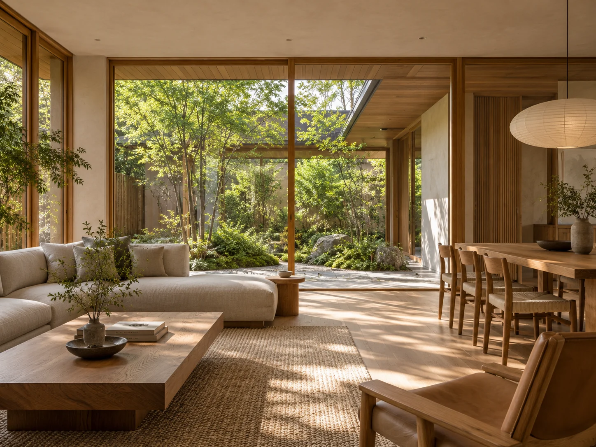
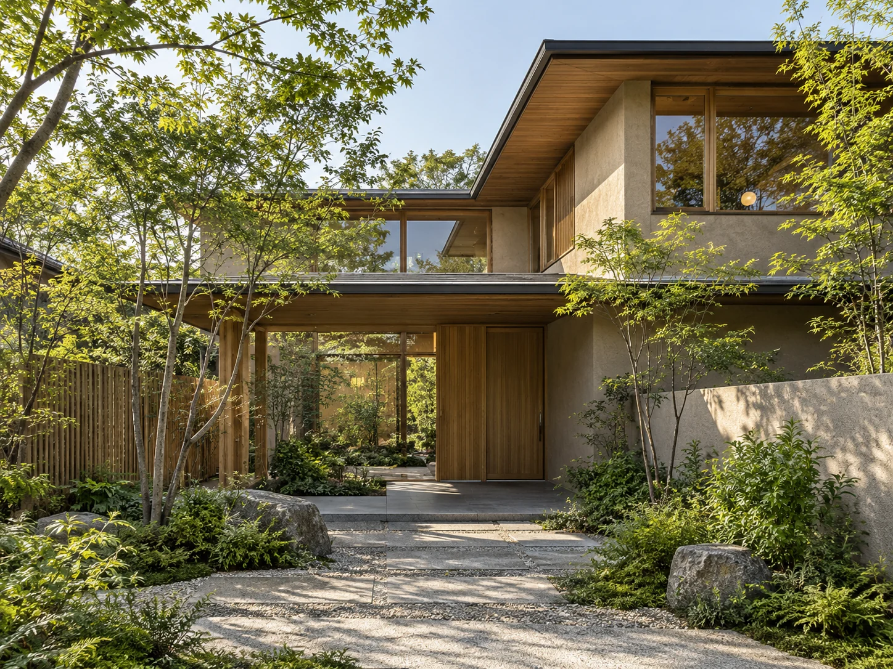
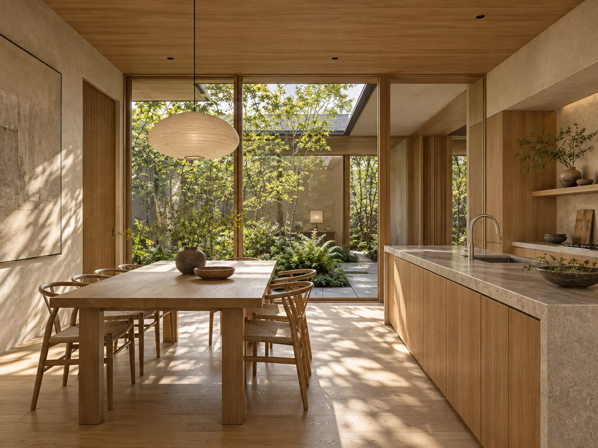
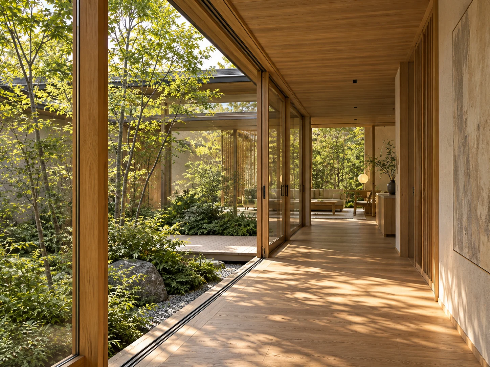
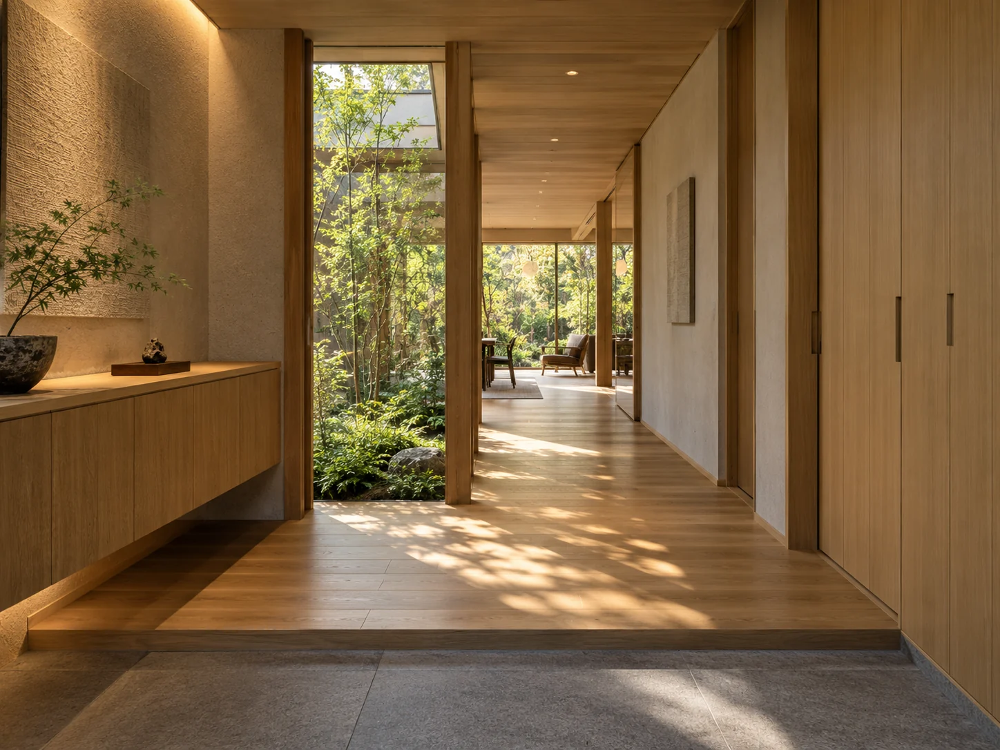
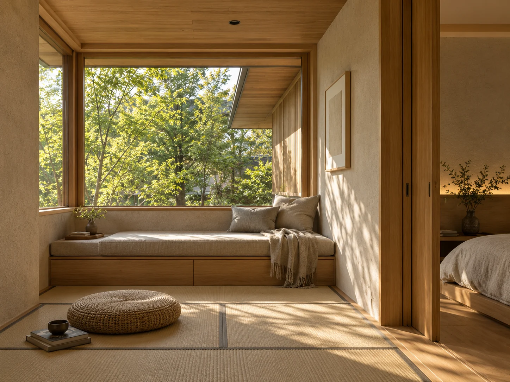
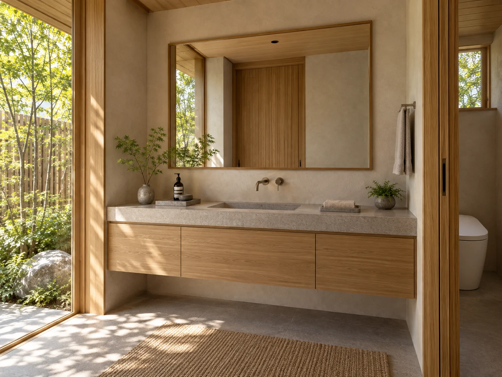
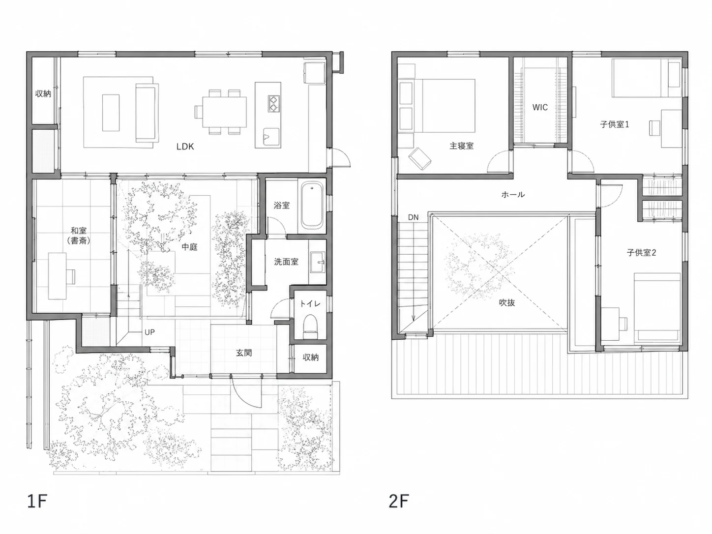

WORKS
中庭のある家
四季の移ろいを身近に感じながら、家族がゆるやかにつながる。
中庭を中心とした暮らし。
- 所在地
- 栃木県宇都宮市
- 家族構成
- 夫婦＋子ども2人
- 延床面積
- 142.56㎡（43.12坪）
- 竣工年月
- 2024年5月
- 価格帯
- 3,000〜3,500万円
STORY
ご要望と背景
緑を感じながら、家族がどこにいてもつながりを感じられる住まいにしたい。
また、外からの視線を気にせず、開放的に暮らせる中庭のある家を希望されました。
自然素材のあたたかさと、季節の移ろいを楽しめる窓まわり。家族がそれぞれの時間を大切にしながらも、ゆるやかにつながる住まいを目指しました。
GALLERY
光と緑を、暮らしのそばに。






FLOOR PLAN
間取り図

MATERIALS
使用素材
- 構造材
- 国産スギ・ヒノキ
- 床材
- オーク無垢フローリング
- 壁材
- 珪藻土塗り壁
- 天井材
- 米松板張り
- 外壁材
- そとん壁
- 屋根材
- ガルバリウム鋼板
- 建具
- 造作建具（オーク材）
- キッチン
- オリジナルキッチン（オーク突板）
- 洗面
- モールテックス
- タイル
- 磁器質タイル（グレー）